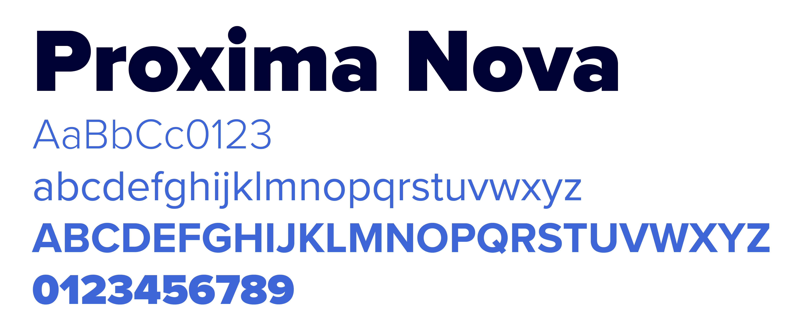
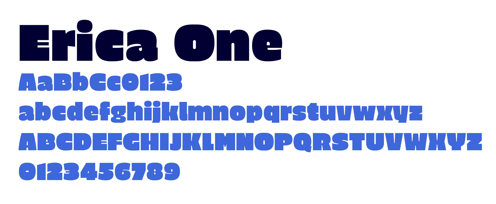
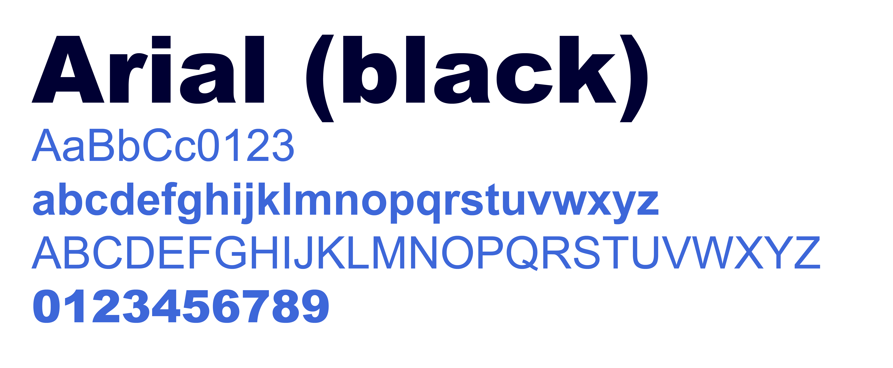

lettertypes
Proxima Nova wordt gebruikt voor alle communicatie van Buda. Het is een erg duidelijke, aangenaam leesbare, sans serif letter die in vele gewichten bestaat. Het font kan gratis worden gedownload via de downloadlink.
Erica One is het font waaruit het logo opgebouwd werd. Dit font wordt verder niet gebruikt in de communicatie van het Kunstencentrum. Via de downloadlink vind je wel een gratis te downloaden versie van het font.

lettertype - office-toepassingen
Voor alle Office-toepassingen maak je gebruik van Arial en Arial Black. Deze hoef je niet extra te downloaden. Ze zitten al inbegrepen in elk Office-softwarepakket.
